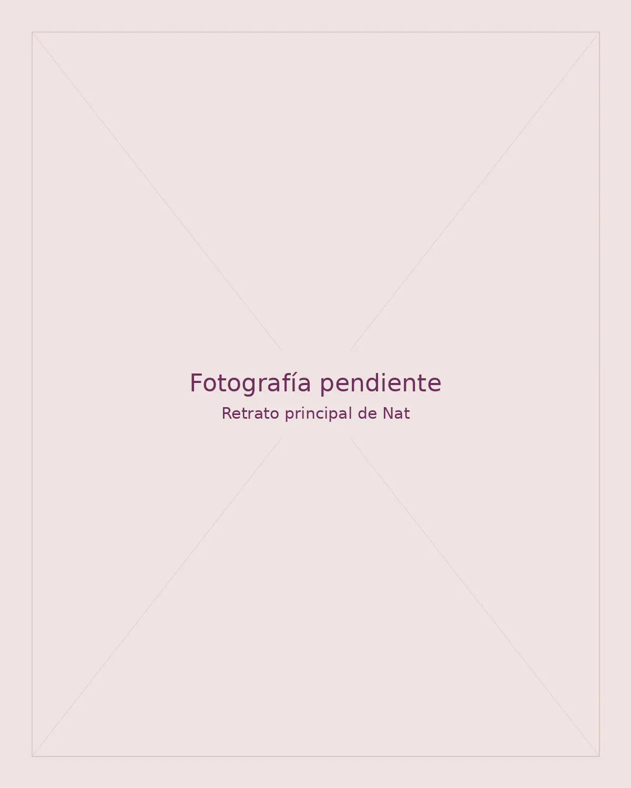
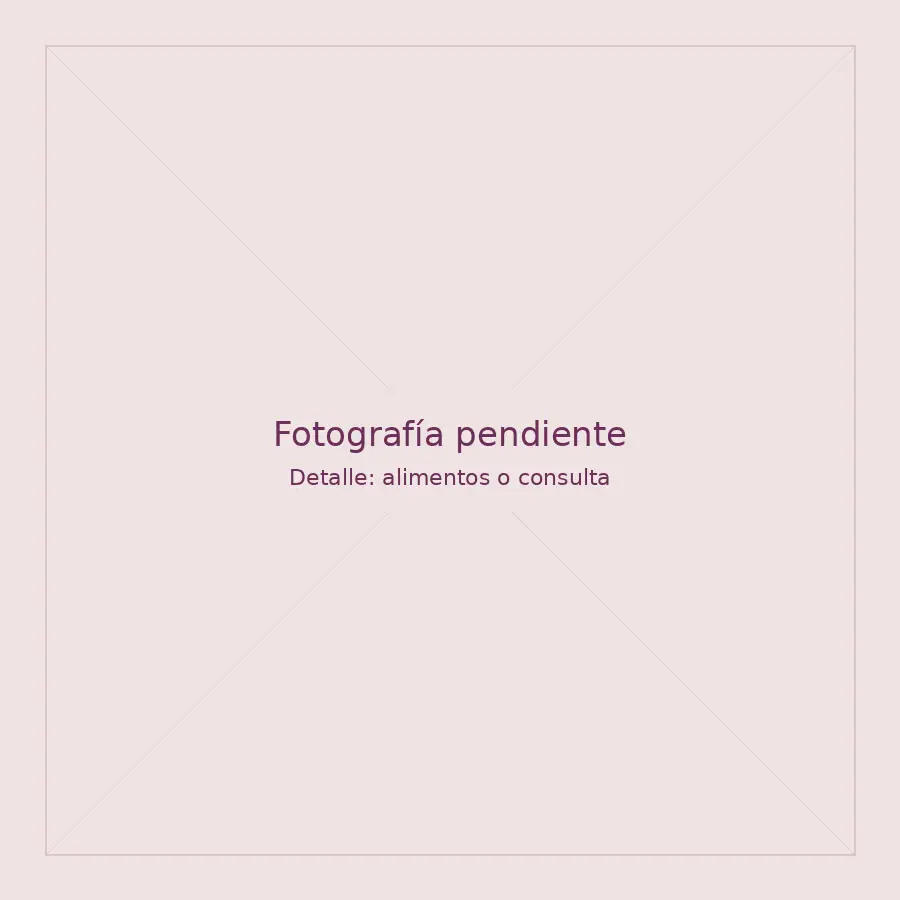
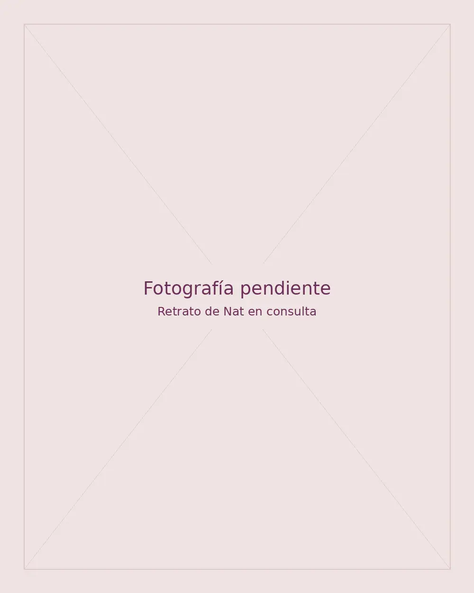

En consultorio
Consulta cara a cara en el consultorio, con mediciones en el momento.
- Duración
- [pendiente]
- Horario
- [pendiente]
Propuesta A en revisión. Los textos y fotos con borde punteado son provisionales y se confirmarán con Natali.
Nutrióloga en [ciudad]
Soy Natali Silva, nutrióloga. Diseño contigo un plan de alimentación que respete tu rutina, tus gustos y tus objetivos de salud.



[Breve historia profesional de Nat: dónde estudió, desde cuándo ejerce y por qué eligió la nutrición. Dos o tres frases escritas en primera persona.]
[Qué tipo de pacientes acompaña y cómo le gusta trabajar con ellos.]
Cada servicio se adapta a tu historia clínica y a lo que quieres lograr. Si no sabes cuál elegir, escríbeme y lo revisamos.
[Qué incluye: historia clínica, hábitos, mediciones y objetivos.]
Preguntar por este servicio[Frecuencia sugerida y qué se revisa en cada cita.]
Preguntar por este servicio[Cómo se entrega el plan y cómo se ajusta con el tiempo.]
Preguntar por este servicio[Descripción breve de la especialidad, en palabras de Nat.]
[Descripción breve de la especialidad, en palabras de Nat.]
En consultorio
Consulta cara a cara en el consultorio, con mediciones en el momento.
En línea
Videollamada desde donde estés, con tu plan y seguimiento en digital.
Sin listas de alimentos prohibidos ni dietas de moda. Un plan que entiende tu rutina, tu cultura y tu salud, y que puedes sostener.
Salud
Una alimentación pensada para tu historia clínica y tu energía diaria.
Bienestar
Comer sin culpa y con calma, en paz con la comida.
Belleza
Hábitos que se reflejan en cómo te ves y cómo te sientes.
Holístico
Cambios que abarcan descanso, movimiento y emociones, no solo el plato.
Así es el camino desde tu primer mensaje hasta tus citas de seguimiento.
Cuéntame brevemente qué te gustaría trabajar y qué modalidad prefieres.
Te confirmo día, hora y [forma de pago o anticipo, si aplica].
Ten a la mano estudios de laboratorio recientes, si los tienes, y la lista de medicamentos o suplementos que tomas.
Agendamos tu siguiente cita para revisar cómo te sientes y ajustar el plan.
¿Tienes otra duda? Pregúntame por WhatsApp.
[Duración de la primera consulta y de las de seguimiento.]
[Costos o indicación de solicitarlos por WhatsApp.]
[Confirmar si atiende en línea y cómo funciona.]
[Respuesta de Nat.]
[Efectivo, transferencia, tarjeta, factura.]
[Frecuencia recomendada por Nat.]
El mapa aparecerá aquí cuando se confirme la dirección del consultorio.
Escríbeme por WhatsApp y te respondo con los horarios disponibles.
Escribir por WhatsApp